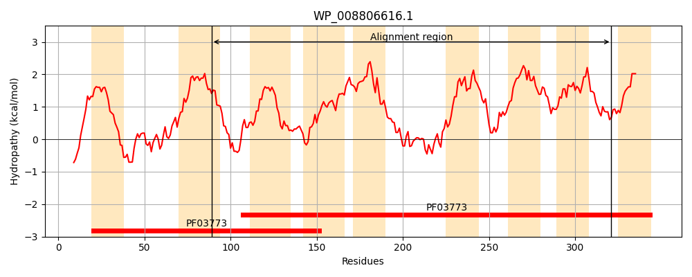
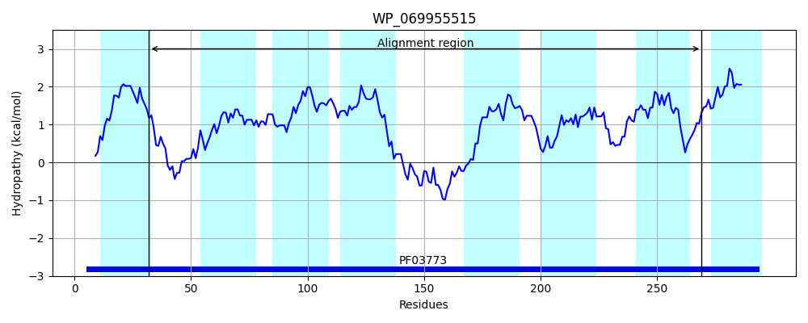
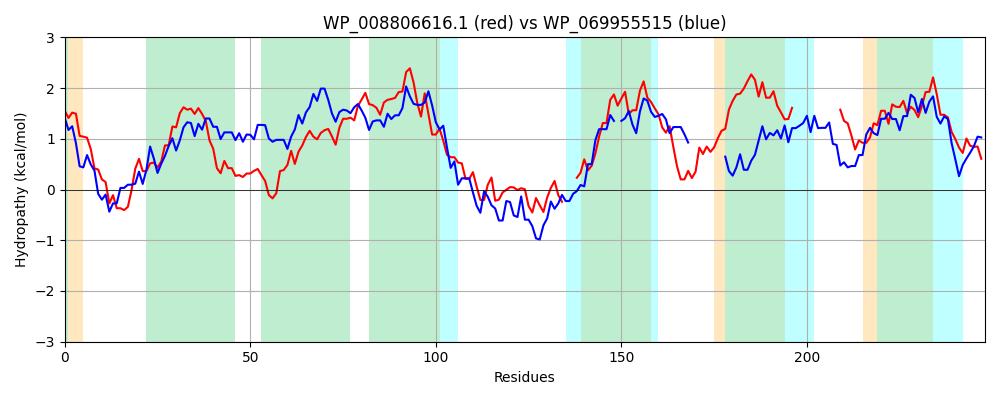

Hit Accession: WP_069955515
Hit TCID: 2.A.119.1.5
Hit Description: gnl|BL_ORD_ID|21368 gnl|TC-DB|WP_069955515.1|2.A.119.1.5 permease [Pseudomonas aeruginosa]
Mach Len: 248
e:0.000000
Query TMS Count : 9
Hit TMS Count: 8
TMS-Overlap Score: 7.850000
Predicted Substrates:None
BLAST Alignment:
Score: 186 , Bit scores: 76 bits, E-value: 9.1e-16, Alignment length: 248, Percentage identity: 25
Query: 89 SLIQVLIPRDWLLRTLGQSRFQGTLLGAIFSLPGMMCTCCAAPVAAGMRKQQVSMGGALAFWMGNPLLNPATLVFMGFVLGWQFALVRLVAGLATVLIVATLVQKWVKEAATQPVAVPAAPSEAARDSFFSRWLR---ALWTLFWNTIPVYILAVLVLGAARVWLFPHADGAVDNTLFWVIAMAIAGCLFVIPTAAE------------IPIVQTMMLAGMGTAPALALLITLPAVSVPSLIMLRKAF 321
+++Q +P + R L +G ++GA C+C PV G+ G ++F + +P+LNP L + + GW+F + A + V + Q + E + V V A F SR R A + LF ++P Y+L +GA + P W+ MA A F IP AA IPI + GM AL+I S+P + +L F
Sbjct: 32 AMMQEYVPASTVQRLLTGRGLRGNIVGAGLGAVTPFCSCSTIPVTVGLLNAGAPFGATMSFLVSSPILNPVILGLLVTLFGWKFTVFYGAASFVLAVAVGAVWQLFGLERDVKKVRVVGESEIAGPTDFKSRLRRAGSAAFALFKTSLP-YLLIGAGIGALIYGVVPGE---------WIATMAGADNPFAIPVAAAIGVPLYIRAETLIPIGMALQSQGMSIGAVAALIIAGAGASIPEVTLLNTIF 269 | Protein Hydropathy Plots: |
|---|
|  |  |
Pairwise Alignment-Hydropathy Plot:
|
|---|
|  |